Cin7 Omni - Quote Module User Guide
Navigation: Sale Module > New Quote
1.Quotes
Create a Quote
- In the main navigation, select Sales 🛒 > New Quote.
- Fill out Contact details. The existing client list has been loaded into the system so a drop down box will appear for you to select from.
Please check the phone number and address to see if this is correct if it isn't this customer please go back to No 1. And re enter the customer details without selecting from the drop down box this will create a new customer (please don't overwrite existing customer with new customer details)
3. Please enter the customer delivery and billing details. If these details are the same there is a little tick box beside the billing address tick this box and it will automatically pass the details over
4. Enter the products you require into the product lines. You can use the buttons across the top to help get the sku no. The full RRP will automatically load as well as any existing discount on the item.
Underneath the products you have added will be a table showing availability of stock.
5. If you are entering a custom product please use the custom product button then use the custom comments button to load the relevant information.Remember to read the MOQ and restrictions.
6.You also use this set of buttons for installation fees.
7.The freight can be calculated and automatically added using the freight cost button.
8. You can manually adjust the freight costing and you select must a freight description. If the order is a click and collect please add these details into internal notes.and For Showroom/ Warehouse Click and Collects please enter (which )Showroom as the delivery address.
9. The quote can be saved as a draft at any stage so that you can return to it if you need to.
10.You must add the appropriate quote memo into “Quote memo field. This will then flow through to be printed on the quote.
You cannot create a hubspot deal or download the quote without this being added.
11. You cannot download or email to customer until you have clicked the Hubspot button once it has linked to hubspot you are able to approve and email customer and proceed to the next steps in processing an order.
12.These buttons are also used to book a site visit into work flow.
13.If a quote has installation required and you either have photos or a site visit has been done the quote needs to be passed through for a quote review before it is sent off to the customer.
14. Once you have clicked the hubspot button or saved as a draft you can also upload photos using the button at the top of the page.
This will automatically load them into the NZSO matching quote into the workflow.
Sending the quote via email
Once you have clicked the hubspot button you are now ready to send the quote off via email.
1.Downloading the quote can be done from the main screen using the download button
And then save and email.
Then go to step 5.
Alternative Method
3.Click the ‘Go to admin’ button on the left hand side.
2. This will take you to the admin page. Where you can select a Standard quote or a Custom quote to download. Download and save.
3.Once you have downloaded the quote, return to the quote.
4.Press the save and email button.
5.There are a lot of preset emails to choose from or you can write your own in the box provided On the left once this is done click the open Gmail button at the top of the page.
6. This will open up a gmail window . In here you must attach the quote, pergola drawings and care guides.
Clicking these buttons will provide the options for your and will attach the selected items.
7. If you want to receive a copy of the invoice/quote add your email address to the email.
8. Lastly attach the quote and use the small pen icon to add your email signature.
Converting a quote to a sales order/invoice
1.This can be done from inside the quote by clicking the Convert to sales order button . Please read the pop up message before converting
- Then go to step 4.
Alternative method.
- As long as you have created a hubspot deal for your quote you can then take a payment on the sale.
- From inside the quote click go to admin
- Then you can click the action button and select convert to sales order
- This will open the Sales Order screen . please then hit save
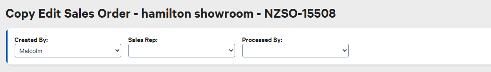
- When to make the BOM is when there is a yellow label advising there is a BOM to make
And it's the make BOM from master one not just make
6.You must adjust the Distribution Branch to allocate where the stock is being dispatched from
7.You can add your payment now
8.From here you approve and select the download invoice to download and email to the customer.
Surcharges
You only need to add the surcharge to the quote if the customer is paying by Payment link this is added underneath the freight .
Sales and Quotes
Create a Sales Order
- In the main navigation, select Sales 🛒 > Sales Orders.
- Click New Sales Order.
- Search for an existing customer using the Company or First Name fields.
💡 Tip: You can also create a new contact by entering all their contact information. Once saved, this contact will automatically sync to the CRM. - Select the Branch from which you would like to dispatch the goods.
Navigation: Sale Module > Sales Orders
- In the product grid, search for and add products by either Code or Product Name.
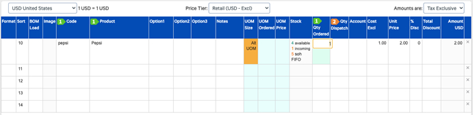
- Click Approve (or Approve Back to List) to finalize and open the Sales Order.
📌 Note: An open sales order reserves the specified product quantities, directly reducing the Stock Available.
- Public comments
Please enter all public comments in this field. They will appear as comments on the Quote, Order Confirmation, or Invoice templates.
Create a Backorder
When stock available items in an order will be despatched partially, you can split remaining quantities into a new backorder:
- Locate the order, click the Cog wheel icon, and select Admin.
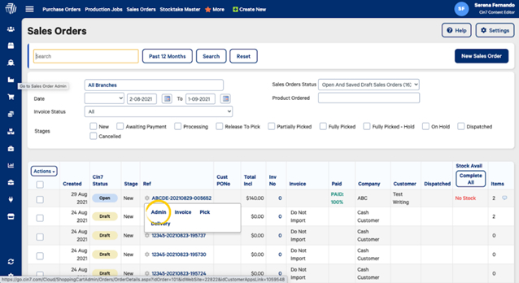
- From the Actions menu, select Select Items To Back Order.
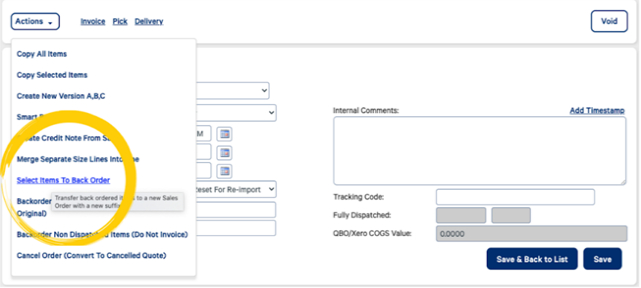
- Enter the quantity to backorder, or click Select All to populate all outstanding items.
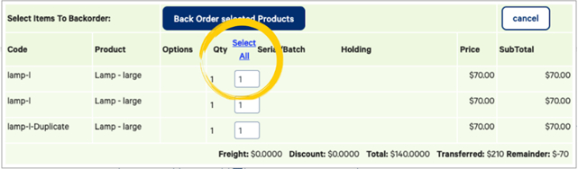
- Click Back Order Selected Products.
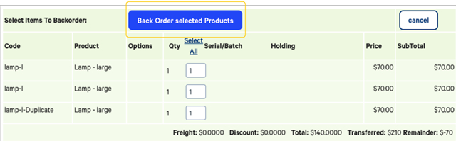
- In the new order window, click Approve Back to List.
ℹ️ Order Number Format: The new backorder shares the original order number with an appended letter (e.g., NZSO-15000 becomes NZSO-15000A).
Edit an Order
To swap products or adjust quantities after placing an order:
- Order Not Dispatched: Edit the original order directly.
- Order Already Dispatched: Forward the order to customer service to issue a credit note for store credit.
Print or Email Sales Orders
Accessing the Admin Page: Go to Sales Orders and open the Admin page via one of three ways:
- Click the Cog wheel icon > Admin.
- Open the order and select Go to Admin.
Printing & Emailing:
- Print Documents: Use the top bar options to print Quotes, Order Confirmations, or Invoices. All templates use the dynamic branch information so no specific branch templates required. Dynamic branch information includes branch address and back account information.
- Email Documents: Scroll to the Templates section (bottom right) and select the required email link.
- Edit the email body if needed.
- (Optional) Click Link to preview the PDF attachment.
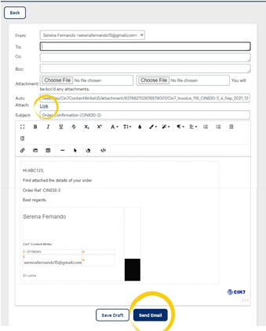
- Select your preferred From address and click Send Email.
Sales Order List & Filters
The Sales Order List displays all Cin7 Omni sales orders with flexible filtering and bulk action tools.
Sales order list
Cin7 Status
The Status icon changes depending on whether the Sales Order is Open (Approved but not Fully Received), Received, Draft or Void.
Cog Icon
Hovering over the cog icon reveals additional options:
Select Admin to view the Admin screen - a summary page with Email templates.
Ref
Select the Sales Order's order number to edit its contents.
Check Order’s ETA
The container number and ETA related to each order are listed in the order list. 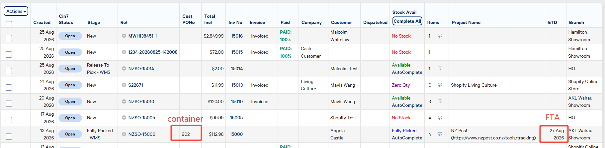
In Order → Admin → Linked Transactions, you can also see all the related POs.
List Filters
Use top-level filters to narrow down visible orders. Click Reset to clear all active filters.
- Branch: Filter orders by specific branch locations.
- Keyword: Search by Reference ID, Customer/Company Name, or Invoice Number.
- Users: Filter orders by assigned Sales Representatives.
- Stages: Filter by manual or automated order stages (e.g., Dispatched, Processing).
- Product Ordered: Search orders by specific purchased items.
Date Filter Types
Date Filter | Description |
Created | Date the Sales Order was created. |
ETD | Estimated Time of Delivery (items with no ETD are excluded). |
Invoiced | Date the order was invoiced. |
Dispatched | Fully received date of the order. |
Modified | Orders modified within the selected date range. |
Payment | Orders with payments added in Cin7 Omni within the selected date range. |
Status Filters
Status Option | Description |
Open & Saved Draft | All Open (Approved) or Draft (Unapproved) orders. |
Dispatched (Last 7 Days / Current / Last Month) | Orders fully dispatched within specified timeframes. |
Dispatched but not Invoiced | Items sent without an assigned invoice date. |
Accounting Errors / Discrepancies | Sync issues or price mismatches with accounting software (e.g., Xero). |
No COGS Found (Last 12 Months) | Non-stock or zero-cost items without assigned COGS. |
Search All / Past 12 Months | Displays all orders or orders created within the last year. |
Understand Stock Level Metrics
Stock Metric Definitions
- Stock Available: Stock On Hand - Open Orders & Production Jobs. Can be negative if open orders exceed physical stock. Click to view the last 50 transactions.
- Stock On Hand (SOH): Physical stock available in the warehouse. Cannot be negative. Click to view the Open to Sell (OTS) breakdown.
- Holding Stock: Stock reserved and unavailable for sale (e.g., branch transfers in transit, returned faulty items, or manually assigned holding locations).
- Incoming Stock: Quantity of items currently in open Purchase Orders.
- Supplier Stock: China warehouse available stock levels.
You can view supplier – China warehouse stock levels directly in the product list view. Please note that this feature only applies to standard products; for virtual stock, please check B2B websites for further information, invited only. (https://cnlivingculture.b2b.cin7.com).
Open to Sell (OTS)
Locating OTS:
- Product List: Go to Products, then click the SOH number.
- Sales Order Window: Select the Stock column next to an added item.
Interpreting OTS Data:
- Date / Due Lines: Displays incoming stock from transfers (TRF) or purchase orders (PO) versus outgoing dispatched quantities.
- Distribution Branch: Switch tabs (Current Branch, Other Branches, All Branches) to view available stock in other warehouse locations and dispatch directly.
From within a sale
- From the left navigation, select Sales, then New Sales Order.
- Enter a product, then select in the Stock column.
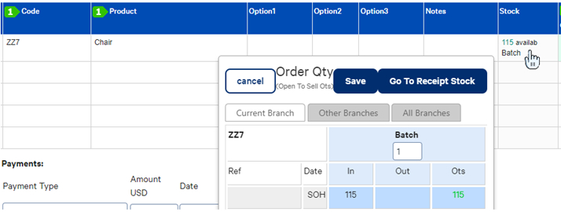
Use open to sell
The following example is for a product "Chair", viewed from the Products module: 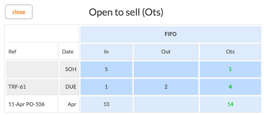
In this image, Current SOH is 5. In the line marked "Due", however, 1 item is due into stock (from a Branch Transfer TRF-61) and 2 are due to be dispatched in outstanding Sales Orders. This means that 4 more chairs can be sold.
Also evident is that on the 11-April (three weeks from the present), another 10 chairs in PO-106 will be received. This means that if the customer is willing to wait until the shipment arrives, they can buy a maximum of 14 chairs.
Let's look at a more complex product, a t-shirt in multiple sizes, but this time viewed from the Sales Order module.
Viewing from the Sales Order module allows us to inspect other branches but let's start with the current branch. In the current branch, there is stock on hand of each size but an open order for 100 of each size means that there is not enough stock to create a sale without delaying dispatch. There is a Purchase Order due tomorrow, for only a few items, but in July a larger order is arriving. At that point, there will be 5 x S, 6 x M and 27 x L Open to Sell. XS and XL have not yet been ordered so there is not enough stock to place an order for these sizes.
We can also look at Stock in "Other Branches" from the same window:
Here you can see that this product is in stock elsewhere. You could potentially add a "Distribution Branch" to the order, which will allow you to sell out of another branch. Adding a Distribution Branch will cause another tab to appear on the "Open To Sell" table: 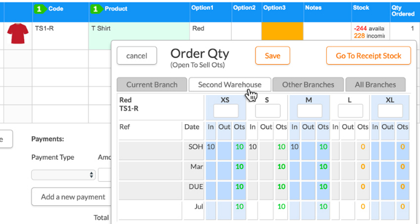
Virtual stock with bill of materials (BOM)
Virtual stock is the amount of a finished product you could potentially make, given the stock of its components.
For each component, Cin7 Omni calculates the Stock Available (in the same branch) divided by the Qty in the bill of materials. The lowest result of these calculations equals the virtual stock.
For example, let's say that you have a chair that is made from four legs, one seat, and one cushion. If there are 20 seats, 20 cushions, and 8 legs, all in the same branch, then we can calculate the virtual stock as follows:
- Legs: 8 / 4 = 2
- Cushions: 20 / 1 = 20
- Seats: 20 / 1 = 20
The smallest result is 2 and therefore that is the virtual stock number in this example, and the number of chairs you could produce using the current stock of its parts.
There are two places you can view Virtual Stock.
OTS view
From the left navigation, select Products.
Select the SOH column for the product.
The Virtual Stock will be shown in the pop-up window.
The OTS view can have a different amount of virtual stock than the Product list view or your integrations. The OTS view does not need the components to be in the same branch location when it is calculating the virtual stock. All other virtual stock calculations require all components to be in the same branch location.
Virtual stock column in Product list view
You will see different virtual stock amounts for your different branches (depending on your branch filter).
Store Credit
Issue a Customer Credit
- To issue a customer credit without editing an order:
Please contact the Customer Service team to process it for you. - To issue a customer credit by editing an existing order:
- Go to Sales → POS → Sales → List Sales.
- Search for the order number under All Orders.
- Click Change to open the order in POS.
- Remove a product or add a new product as required in the search field.
- When you select the REFUND, an option will be available for Store Credit. This will only show only when you have added a customer to the transaction.
Manually Dispatch Sales Order
- Dispatch all order items
If the customer has collected all the products from the showroom, you can fulfil the order directly from the Sales Order list page.
Once you fulfil the order, the order status will change to “Dispatched”. This option is only visible when all items in the order are in stock.
- Dispatch the available partial order items
- Open the sales order.
- In the Qty Dispatch field, use the green arrows to select the stock you are wanting to dispatch from the location. The location to fulfill this from will be your own showroom.
- Click Save. The specific stock you have chosen will be dispatched.
FAQ
My backorder no longer shows on the original invoice?
When the backorder itself has been fully dispatched, it no longer appears on the original invoice.
Can I dispatch a Click&Collect order from the showroom?
You can dispatch all or some of the items in an order from your showroom location, please refer to the instructions here Manually Dispatch Sales Order.
Cin7 Omni - User Guide
2-Product Module:
认识界面：
搜索框：
- Branch–查询哪个branch的产品和库存
- Products–按产品类型，active ，public（全渠道销售）， secure（产品创建时选择了secure或internal，比如办公用品，员工服装等）, wholesale（B2B）
- Channel–backend， shopify
- Category manager–搜自己的产品
注意：产品类型是secure/internal的不会出现在销售端。展厅展示品，属于public类型，要做holding stock的操作（stock→ adjustment），才能不被计算为可售库存。
Category分类
展示已经创立好的一级category。点击category下方会出现二级，点击二级会出现三级分类。
修改分类：点击前端符号，在新的页面里调整分类。清除所选分类（绿色），点Reset清除。
新增分类--如果是一级分类就没有parent category，留空即可。新增二级或三级分类，先选上parent category。
新建产品
- 手动新建
填写必须项即可
如果想copy→新建，在product list点击工具符号选择copy
- 导入新建
关于产品导入（product）和bom导入（BOM masters）-- 先通过Actions导出一两个sample产品，更新内容，再在Actions里导入新产品或新BOM
- Shopify下载产品
通过dashboard下载产品，产品的描述，option，图片，product type和sub type，Retail价格和special价格？？？都会被下载下来（不用担心special价格，因为我们的网站和系统是分开设置活动价格的，虽然促销价被下载下来了，但是因为没有设置起止日期所以不会在系统里生效，但是看起来比较乱，解决？？？），但是还需要手动做几个事情完成所有创建。
- 编辑Category
- 编辑Supplier
- 编辑Category manager
- 如果是BOM产品，order type要选择Kit，同时需要在系统手动新建组件（如适用），再完成BOM创建
关于产品的Order Type，我们目前就用两个选项
Order是普通产品
Kit是BOM组合产品，会有虚拟库存
注意：在NZ账户中，我们主要是通过从shopify下载产品和图片的方式新建产品。个别不在网站端销售的，仅在销售端销售的比如安装产品，需要手动新建。在FOSHAN账户，也连接了shopify，可以直接下载产品。
3-BOM Masters
菜单BOM Masters，这里展示所有被设置为BOM的产品。
BOM产品不在这里设置，这里只展示
4-Sales Module
所有Quote在Sales→ Quotes界面，只有收款确认销售的才会出现在Sales界面
认识sales lists界面：
- Order status： open，invoiced，despatched
- Stage：关系不大
- Ref：Order number （shopify订单号会保留，不会转换为系统订单号）
- Customer PO number： 填containier number（销售和客服都会使用，要及时更新）可以通过bulk update
- Invoice number会和order number一致
- Paid：付款进度百分比
- Despatched： tracking number
- Stock available：系统提示的针对这一单的库存情况
- Item：这单含几件产品，旁边的bubble能预览
- Project name：客服使用的
- ETD：是销售下单时填写的预计的订单发货日期，如果前面更新了customer PO，这里也要一并更新为PO到库时间
- BOM产品会有Make的黄色标签，如果库存落在产品上，则无需点击make再进行任何操作；如果库存要落在组件上，则需要点击make然后选make new BOM from BOM master；
销售订单页面：
在销售订单的go to Admin里，可以看到关联的PO（前提是你已经在PO的transaction里allocate了这个订单）或关联的credit note
已经发给客人的邮件，在右侧Contact Logs查看
订单列表页的Actions按钮：
选择Bulk update–可以一次更新多个订单的customer PO和ETD
5-Understand Stock
- Product List
在产品的产品列表中查看库存：
- virtual stock （是针对组合产品）
- holding stock（包含transit在途，returned但是标记为faulty，手动分配为holding）
- incoming stock（已经创建了PO的）
- supplier stock（佛山仓库标准产品的available的库存*）
- 关注的价格和成本--retail零售价和nzd cost成本
注意：关于supplier stock，虽然这里可以看到FOSHAN仓可用库存，但是由于组合产品的库存是出现在virtual stock这一列并不是stock available这一列，所以从NZ账户是看不到FOSHAN仓的组合产品的虚拟库存的。FOSHAN仓组合产品的虚拟库存会以另外的网页形式供销售查看。
- 了解组合产品的库存
有两个地方可以查看组合产品的库存:
- OTS 视图
- Product List（产品列表）
产品列表的SOH里的数字–点开后是OTS 视图，这个组合产品库存数量可能与外层 Product List（产品列表）视图中显示的组合库存数量不同。因为在计算组合库存时，OTS 视图不要求组成产品（components）必须位于同一个分支/仓库地点（branch location）。而产品列表的组合库存计算，要求所有组成产品必须位于同一个分支/仓库地点。所以，OTS 视图是不考虑配件的地理位置，把所有各地的可用配件放在一起可以做的极大值，而产品列表是考虑了地理位置，是每一个branch分别可以组合的最大值的加总。
6-STOCK Module
移库Stock-Transfer：
- Stock-Bin location transfer (use for one branch only)
- Stock-Branch transfer
我们常用的应该是Branch Transfer：
新建Branch Transfer后，选择transfer from（手动清除并输入关键字）后选择transfer to（在下拉菜单里选择）
填写产品和数量等必要信息，选择approve back to list即完成下单动作。
Aprroval date选上日期
Dispatched date选上日期即可锁定库存
库存是在holding状态，直到仓库填写completed date，库存位置从holding转移到实际branch
Stock–Track stock movement
正常查询即可
Stock–Adjustments
正常入库使用接收PO。如果出现特殊情况，比如标记为faulty的产品但是修复后上架，或是标记有误重新上架，则使用Adjustment。该功能不应频繁使用。
注意：在点击approve back to list前，要填好competed date，否则这是一个open adjustment，并没有完成，库存也不会加上。
7-Purchase Module
新建PO的方法：
用smart buyer
- 使用Smart Buyer先来查看根据已有的销售订单需要的初步数量，然后从smart buyer生成一个新PO，然后从新建PO里可以allocate订单或进一步修改数量
- 可以按照订单和supplier查看，各个订单新建po，然后再合并为一个大po。关联订单会跟随到合并PO
- 在PO中可继续新增产品，有销售订单的要关联销售订单
- 如果是BOM产品，如果订单是按照BOM下单的，但是采购需要按照组件采购，需要点Make选择“make new BOM from BOM masters”, 如果订单是按照组件下的，则采购也会是组件采购
直接新建PO
- 手动新建PO，选择产品，关联销售订单
- 关于BOM的要求一致
注意：
在PO里添加Container number和ETD或者在bulk update里面添加。
FOSHAN账户:
NZ账户的PO会自动成为FOSHAN账户的SO。 同步过去的PO，后续如有任何修改不会再次同步更新，所以如要添加需要新建PO，如要调减，需要在PO和FOSHAN的SO里都调减数量。
8-Shopify同步及促销
Integration–Shopify Living Culture
产品新建或更新
NZ账户的产品新建或更新通过在dashboard里下载产品和图片来实现，FOSHAN账户也关联了LC可通过下载实现
产品促销设置
Shopify和Omni分别设置
Omni产品促销设置
挑选一个产品，在产品页选择促销活动方式。
选择并“添加”
在Discount里修改促销比例，在Dates里选择时间段，在Description加上促销活动名称
Omni品类促销价格设置
在产品页面，点击品类或分级品类前的修改图标
在打开的页面里添加促销活动
除上述两种方式外，还可以以导入方式进行设置。但如果品类不多，手动进行完全可以。如想了解文件导入，再和我联系。
Shopify Dashboard
仅有的操作是最下面的产品部分
WMS
2-接收PO
在仓库管理系统（WMS）中，您可以在“收货（Receiving）”模块中接收采购订单（Purchase Orders）和分店调拨单（Branch Transfers）。您可以对订单进行完全收货（Fully Received），也可以仅接收订单的一部分（Partially Received）。
分店调拨单必须先具备批准日期（Approval Date）和发货日期（Dispatched Date），然后才能在 WMS 中进行收货。
采购订单收货 (Receive your orders)
在您的仓库管理（WMS）系统中，打开 Receiving（收货） 选项卡。
- 扫描或输入订单参考号（Order Ref），或者从 Item(s) to Receive（待收货商品） 下拉菜单中选择商品。
- 订单将显示在 Item(s) to Receive 下方。您可以按 Product（产品）、Location（位置） 或 OrderRef（订单参考号/PO号） 对列表进行排序。
- 点击每个商品数量旁边的加号（+），重复此操作，直到该订单的所有商品均已移至 Items Received（已收货商品） 下方。
- 在 Receive into（收货至） 下拉菜单中，选择商品将要存放的库位：
- Last Location（上次位置）：商品将直接收货入库至该产品上一次使用的存放位置。
- No Location（无位置）：第一次接收某种商品时，请选择“无位置”。如果您在 WMS 设置中启用了货架管理（Racking），也请选择“无位置”。
- Select Location（选择位置）：手动选择商品入库的具体位置。您可以搜索特定的库区（Zone）或货位（Bin），然后点击 Save（保存）。您选择的位置将自动成为该产品后续的“上次位置”。
- 点击 Complete（完成）。
- 如果订单中的所有商品均已收齐，订单状态将更新为 Fully Received（已完全收货）。
- 如果仅接收了部分商品，订单状态将变为 Partially Received（部分收货）。您可以在 WMS 设置中修改参数，选择在部分收货时是否自动生成缺货预售订单（Backorder）。订单中剩余未收到的商品将带有“部分收货”标签，并保持未结（Open）开启状态。
- (可选) 您可以在采购订单中添加备注信息以及供应商发票号（Supplier Invoice Number）。点击采购订单，打开
3-检索订单（Order）
在左侧菜单栏选择Orders，然后点开筛选条件。从中设置库存，物流以及销售订单或库存调配的筛选条件，在stage里选择“release to pick-WMS”选项，这个选项是由客服在订单列表中选择后更新为这个状态的，如要查看其他stage，也可以进行多选或不选，选定后在上方点击 Apply filters。
随后，即可看到符合筛选条件的订单列表。
继续在复选框选择要处理的订单
点击 Pick Selected（拣选所选） 或 Print Selected（打印所选） 按钮。该按钮的显示名称会根据您的打印设置而有所不同。当您将订单下发至拣货阶段（Release to pick）时，可以同时打印装箱单（Packing slip）或拣货单（Picking list）。
您还可以通过点击 Pick All（全部拣选） 或 Print All（全部打印） 按钮，将所有可见的订单一次性下发至拣货。
4-订单拣货 (Picking)
您可以对任何已下发至拣货状态（Released to pick）的销售订单和分店调拨单（Branch transfers）进行拣货。
订单拣货
- 选择 WMS 菜单，然后选择 Picking（拣货）。
- 点击 Pick Next Group（拣选下一组） 可以快速选择下一个订单。您也可以通过下拉菜单选择订单，或者通过输入订单参考号（Order reference）进行搜索。
- 您可以同时选择多个订单进行合并拣货。
- 点击 Click to Pick（点击开始拣货）。这将锁定该订单，防止其他用户重复拣选同一订单。
- 系统将显示商品清单及其对应的存放库位（Location）。您可以按分店库位、产品（Product）或订单参考号对商品清单进行排序。
- 选择您要拣选的商品。
- 点击 加号图标（+） 或直接扫描商品进行拣货。重复点击或扫描，直到数量与您实际拣选的数量一致。您也可以在数量框中直接输入实际拣货数量。
- 对于带有序列号（Serial number）、批号（Batch number）或存放在多个库位中的商品，您需要先手动选择具体的序列号/批号/库位，然后才能进行拣货。
- 完成拣货后，点击 Complete（完成）。
- 如果某个订单仅完成了部分商品的拣货，当您点击 Complete 时，系统将弹出警告提示。您可以选择取消（并继续拣选剩余商品），或者直接进入打包（Packing）环节。在订单打包完成后，所有未拣选的商品将自动生成缺货预售订单（Backorder）。
拣选多库位商品 (Pick items in multiple locations)
如果您的商品存放/上架在多个库位中，您需要选择实际进行拣货的具体库位。
点击您实际拣货库位旁边的 Select（选择）。点击加号图标，直到数字与您实际拣选的数量一致。
5-打包与发货订单 (Pack and ship)
在您完成销售订单（Sales order）或分店调拨单（Branch transfer）的拣货后，可以使用 WMS 对这些商品进行打包和发货。
选择待打包订单 (Select orders for packing)
- 可以通过扫描装箱单（Packing slip）或使用搜索框来选择订单。
- 搜索框默认搜索订单参考号（OrderRef）。
- 选中的订单将显示在 Items to Pack（待打包商品） 下方。
打包产品 (Pack products)
- 扫描或选择 Items to Pack 下方的产品。
- 打包每个商品时，点击对应的加号（+）。
- 已打包的商品将移至 Items Packed（已打包商品） 下方。
- 当所有商品完成打包后，系统将自动弹出 Ship Order（发货订单） 窗口。根据需要输入承运商（Carrier）和追踪号（Tracking code），然后选择 Submit Order（提交订单）。
打包部分拣货的订单 (Pack partially picked orders)
- 如果订单未完成所有商品的拣货，Ship Order 弹窗上会弹出提示，告知该订单尚未完成全部商品的拣货与打包。
- 系统会提供一个选项，允许您直接使用当前已有的（已拣选的）商品完成打包流程。
- 如果选择继续打包，系统会提示将针对剩余未拣选的商品自动创建一个缺货预售订单（Backorder）。
- 原订单中所有已拣选的商品在系统中都将被标记为已发货（Dispatched）。
6-创建库存盘点 (Create a WMS stocktake)
使用 WMS 盘点功能（WMS Stocktake）随时掌握您的库存状况。创建盘点任务时，您可以选择清点方式（盲盘或指导性盘点）以及要包含的库位。盘点启动后，您的团队即可对商品进行清点，随后您可以审核差异（Variances）并完成库存调整（Adjustments）。
创建盘点 (Create a stocktake)
只有管理员（Administrators）或拥有经理（Manager）权限的用户才能创建盘点。
- 选择 WMS 菜单，然后选择 Stocktake（盘点）。
- 选择 New stocktake（新建盘点）。
- 输入盘点名称（Stocktake name）和盘点日期（Stocktake date）。参考号（Reference）将由系统自动生成（例如：ST-2026-2）。
- 选择清点方式（Count method）：
- Blind count（盲盘）：在清点过程中，向操作人员隐藏每个产品的现有库存量（Stock on hand）。
- Guided count（指导性盘点/明盘）：在清点过程中，向操作人员显示每个产品的现有库存量。
- 选择盘点类型（Stocktake type）：
- Full stocktake（全面盘点）：清点所选库位中的所有商品。
- Partial stocktake（局部/部分盘点）：仅清点特定库位中的商品。
- 对于局部盘点（Partial stocktake），需要手动添加库位。请注意：一旦盘点启动，您将无法再添加或删除库位。
- 在 Search and add a location（搜索并添加库位） 框中输入库位名称，然后点击 Select（选择） 进行添加。标记为 All bins（所有货位） 的库位会将该库区（Zone）内的每一个货位（Bin）都包含进来。
- 若要清点未分配库位的商品，请勾选 Show items without a location（显示无库位的商品） 复选框。如果保持未勾选状态，盘点将仅包含您选择的库位。
- 选择 Start stocktake（开始盘点） 即可开放盘点任务供团队清点；或选择 Save as draft（保存为草稿） 以便日后继续编辑。
查找盘点 (Find a stocktake)
盘点列表（Stocktake list） 将显示您的所有盘点记录（包括已完成的盘点）。您可以按盘点名称、参考号（Reference）或库位（Location）进行搜索。您还可以按状态对盘点进行筛选（All statuses/所有状态、Draft/草稿、Open/进行中、Review/审核中、Finalize/结算中 或 Completed/已完成）。
删除盘点 (Delete a stocktake)
只要盘点的状态不是 Finalize（结算中） 或 Completed（已完成），您随时可以将其删除。
- 在列表中找到对应的盘点。
- 在该盘点条目右侧，点击 ⋮（三点菜单图标），然后选择 Delete stocktake（删除盘点）。
- 随后选择 Delete（确认删除）。
7-理解库存 (Understand Stock Level Metrics)
库存指标定义 (Stock Metric Definitions)
- 可用库存 (Stock Available)：现有库存（SOH）减去未结订单（Open Orders）和生产任务（Production Jobs）。如果未结订单数量超过物理库存，该数值可以为负数。点击可查看最近 50 笔交易记录。
- 现有库存 (Stock On Hand / SOH)：仓库中可用的实际物理库存。不可为负数。点击可查看可售库存（OTS）的明细拆解。
- 保留/暂扣库存 (Holding Stock)：已被预留且不可用于销售的库存（例如：运输中的分店调拨商品、退回的故障品、或手动分配至暂扣库位的商品）。
- 待入库/在途库存 (Incoming Stock)：当前处于未结采购订单（PO）中的商品数量。
- 供应商库存 (Supplier Stock)：中国仓库的可用库存量。
您可以直接在产品列表视图（Product list view）中查看“Foshan仓库”的库存层级。请注意，此功能仅适用于标准产品；对于虚拟库存（Virtual stock），请访问 B2B 网站获取更多信息（仅限受邀用户登录：https://cnlivingculture.b2b.cin7.com）。
可售库存 (Open to Sell / OTS)
如何查看/定位 OTS：
- 产品列表 (Product List)：前往 Products（产品），然后点击 SOH 对应的数字。
- 销售订单窗口 (Sales Order Window)：在已添加商品旁边的 Stock（库存） 列点击选择。
解读 OTS 数据：
- 日期 / 预计到货明细 (Date / Due Lines)：对比显示来自调拨单（TRF）或采购订单（PO）的待入库库存，以及待发货的出库数量。
- 分销网点/仓库 (Distribution Branch)：切换选项卡（Current Branch/当前网点、Other Branches/其他网点、All Branches/所有网点），以查看其他仓库库位的可用库存并直接安排发货。
8-带有物料清单 (BOM) 的虚拟库存 (Virtual stock with bill of materials)
虚拟库存是指在现有零部件库存的基础上，您理论上最大可组装/制造的成品数量。
系统对每个组件用同一网点（Branch）内的可用库存（Stock Available）除以物料清单（BOM）中的单套用量。所有零部件计算结果中的最小值，即为该成品的虚拟库存。
计算示例
假设有一张沙发，由 4 个单人位、1 个双人位和 1 个三人位组成。如果同一个网点内现有 20 个双人位、20 个三人位和 8 条单人位，则虚拟库存的计算如下：
- 单人位：8 / 4 = 2
- 双人位：20 / 1 = 20
- 三人位：20 / 1 = 20
算出的最小值为 2，因此在本例中，2 就是该组合的虚拟库存数，即利用现有组件库存最多能组装出 2 套沙发。
9-查看虚拟库存的两个位置
10-创建分店调拨单 (Create a branch transfer)
在 Cin7 Omni 中，您可以使用分店调拨（Branch Transfer）功能在不同的分店/仓库网点之间转移库存。调拨流程会首先将库存从发货网点扣除，将其转为“暂扣/在途”状态（使该部分库存不可被销售），随后再由接收网点进行收货入库。
您也可以在仓库管理系统（WMS）中对分店调拨单进行拣货、打包和发货。
创建分店调拨单 (Create a branch transfer)
创建分店调拨单后，库存将从发货网点扣除，随后接收网点便可以对该批库存进行收货。
- 选择 Stock（库存） 菜单，然后选择 Branch Transfers（分店调拨）。
- 点击 New Branch Transfers（新建分店调拨单）。
- 在 Branch（发货网点） 字段中，输入发送库存的网点/仓库名称。
- 从 Transfer To（调拨至） 下拉列表中，选择接收库存的网点/仓库。
- 在产品列表网格（Product grid）中输入要调拨的产品。
- 根据需要填写批准日期（Approval Date），然后输入发货日期（Dispatched Date）。这会将库存从原网点调出并转入“暂扣/在途库存（Holding stock）”。(注意：如果您正在使用 WMS 系统来发货调拨单，请勿在此处手动添加发货日期)。
- 选择 Approve（批准） 以完成调拨单的确认。
- 调拨单批准后，您还可以添加额外的落地/调拨附加成本（Landed costs），例如网点间转移库存所产生的运费或保险费。
暂扣/在途库存 (Holding stock)
一旦调拨单完成发货，库存就会被转入暂扣/在途库存（Holding Stock）。这意味着货物在运输途中无法被销售。当接收网点收到货物时，该库存将从“暂扣库存”转出，正式计入新网点的现有库存中。
查看暂扣库存有两种方式：
- 在产品页面中：“Holding Stock”列会直接显示在“Allocation Stock（已分配库存）”列的旁边。
- 在现有库存与可用性报告（Stock on Hand and Availability Report）中：运输中的库存将与 SOH（现有库存）分开独立显示。通过将 HoldingGroups（暂扣分组） 字段拖入数据表中，暂扣组内的数量将被按具体分组拆解展示。
11-货位/库位转移 (Bin location transfer)
您可以使用货位转移（Bin location transfer）功能在不同的库位/货位之间移动库存。
当您在 WMS 系统中移动产品时，Cin7 Omni 中会自动同步创建一笔货位转移记录。
- 您也可以通过盘点主表（Stocktake Master）批量更新产品的存放库位。
在库位之间转移库存 (Transfer stock between locations)
- 在左侧导航栏中，选择 Stock（库存），然后选择 Bin Location Transfer（货位转移）。
- 点击 New Inventory Bin Location Transfers（新建库存货位转移）。
- 添加您要在库位之间移动的产品。
- 输入您要移动的库存数量（Qty）。
- 点击 Qty Adjusted（已调整数量） 框。
- 点击您要移动的库存旁边的箭头图标（arrow）。
- 输入新的 Zone（库区） 和 Bin（货位）。如果该库存此前已有存放库位，您需要用新的库位信息覆盖旧的库区与货位。
- 您可以将同批库存分拆转移至多个不同的库区和货位。点击 Add Row（添加行），然后输入对应要移动的库存数量及其新的库区（Zone）和货位（Bin）。
- 选择 Save（保存）。
- 填入 Completed date（完成日期）。
- 选择 Approve（批准） 完成转移。
12-查看产品位置
在Product菜单中，点击SOH数字，查看位置信息。
Shopify订单
Shopify Order的注意事项：
- 如果订单选择银行转账，则后续添加的付款是需要手动在shopify和omni里分别添加付款的。即便在shopify添加付款，该付款信息也不会再被下载到omni订单中
- 在shopify调整订单减少产品或数量，会同步到omni中，但不会移除omni订单中的产品行，只是在产品数量上做更新（比如由1变为0）。如果是调减数量，订单中会出现owing的金额。同时，shopify的调整会触发新建一个credit note，如果订单未发货，应不需要处理credit note的产品数量，如果已发货，需要处理quantity moved数量。退款apply在credit note中。
Shipping option
Project name—>bulk update freight
Return/Refund
在sales order的Admin里选create credit note from sales order
在打开的窗口里选哪些产品要return，然后确定建credit note
接着会打开credit note页面
如果在新建credit note时，这个货已退回，且可以上架则把moved数量填进去，同时检查surcharge，freight是否一同退回，检查退款金额正确后，在payment type那里选“to be refunded”这个选项，点approve或approve back to list。这时候就建成credit note了，把credit note号码放在refund sheet里.
财务处理退款时，会把to be refunded改为实际退款的方式，即完成。财务发送通知邮件给客人。
如果建credit note时，这个货还未退回，则在moved那里留空，检查其他surcharge，freight选项，payment type还是一样选择“to be refunded”，检查金额正确，approve即可。在Admin这里选上processing，表示在等待货物return。
给客人发邮件，要求退还货物。
仓库收到return的货物，在processing状态里找到订单，把moved数量更新，如果可直接上架，则直接完成moved in即可。如果有faulty，则在holding里填上原因，则货物回到location，但是处于不可售状态。如果不可修复要处理，则从holding放出，接着做adjustment减掉stock。
No matching topics.